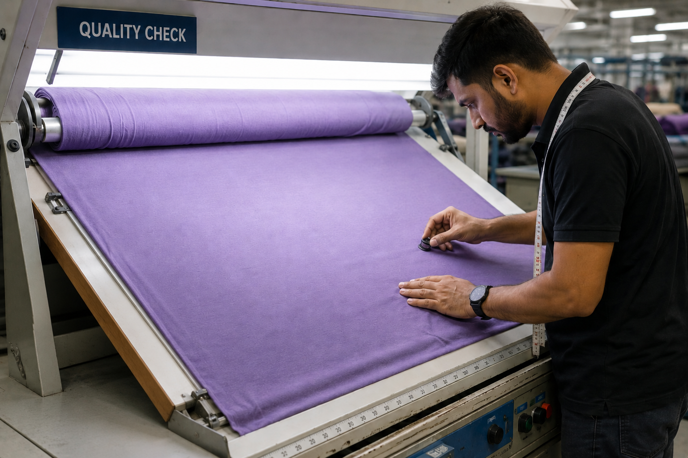
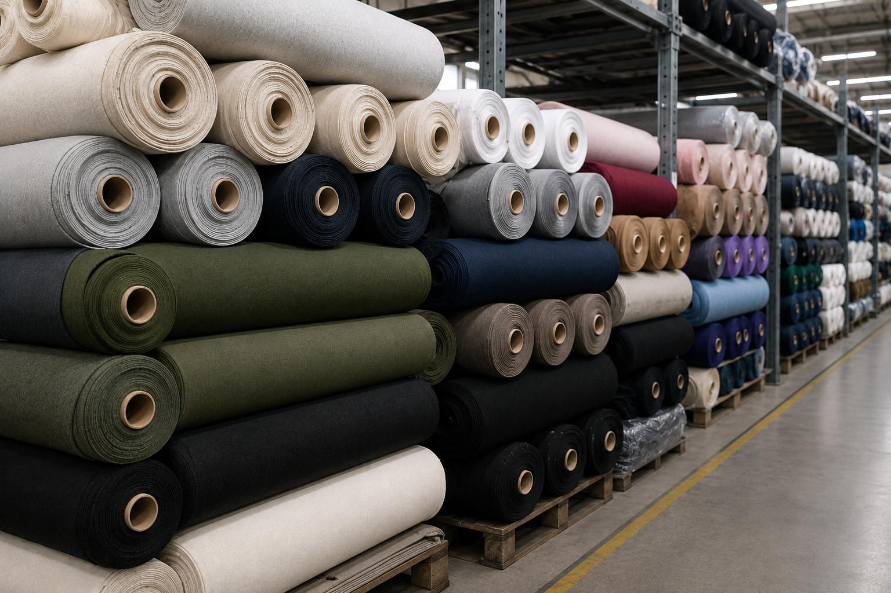

Hover over or inspect each stage's image to view the underlying technical blueprint data that guides our production team.

We source high-grade combed cotton from reputable spinning mills, including SSM Mills. This guarantees long-staple fibers, absolute color absorption consistency, and minimal impurity parameters.


Our circular knitting machines operate under computerized control to stitch threads with exact tension and gauge parameters, preventing skewing, diagonal shrinkage, or loop deformation in subsequent washes.

Utilizing advanced soft-flow dyeing machinery, our fabrics undergo 100% bio-wash treatment. The low-tension fabric movement ensures complete dye penetration, superior color fastness, and an ultra-soft touch.


Every single roll is run on high-intensity light inspection tables to audit for micro-needle holes, loop breaks, oil marks, or weight variance before proceeding to stenter finishing.


Passed through state-of-the-art stenters and compactors, our fabrics are heat-set at precise temperatures. This locks in dimensional stability, guaranteeing zero twisting and minimal residual shrinkage.


Fully certified and labeled fabric rolls are custom poly-wrapped and barcode-tagged, ready for cutting and immediate bulk sewing operations in our Tiruppur factory floor.
We maintain stock of popular running colors to accept orders starting at 100 Pcs. Custom Pantone fabric orders are accepted with a minimum order quantity (MOQ) of 300 Pcs.
Download our verified B2B color chart specifications directly to review available Pantone equivalents, shades, and weight options.